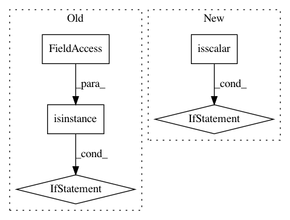

86ce7f9e7db046d0bbf2a4aef50cabd4731167e6,prody/utilities/catchall.py,,showMatrix,#Any#Any#Any#,198
Before Change
width_ratios = [W]
height_ratios = [1, H]
aspect = "auto"
elif isinstance(y_array, Phylo.BaseTree.Tree):
nrow = 2; ncol = 2
i = 1; j = 1
width_ratios = [W, W]
After Change
origin = kwargs.pop("origin", "lower")
tree_mode = False
if np.isscalar(y_array):
try:
from Bio import Phylo
except ImportError:
raise ImportError("Phylo module could not be imported. "
"Reinstall ProDy or install Biopython "
"to solve the problem.")
tree_mode = isinstance(y_array, Phylo.BaseTree.Tree)
if x_array is not None and y_array is not None:
nrow = 2; ncol = 2
i = 1; j = 1
width_ratios = [1, W]
In pattern: SUPERPATTERN
Frequency: 4
Non-data size: 5
Instances
Project Name: prody/ProDy
Commit Name: 86ce7f9e7db046d0bbf2a4aef50cabd4731167e6
Time: 2018-04-30
Author: shz66@pitt.edu
File Name: prody/utilities/catchall.py
Class Name:
Method Name: showMatrix
Project Name: biolab/orange3
Commit Name: b5264000f20db429a3bd371ec66178c9fb49e5ce
Time: 2018-01-16
Author: ales.erjavec@fri.uni-lj.si
File Name: Orange/distance/distance.py
Class Name: SpearmanModel
Method Name: compute_correlation
Project Name: prody/ProDy
Commit Name: 1eb729b019c45c920cb9bb8cb7bca66359fad915
Time: 2018-04-10
Author: jamesmkrieger@gmail.com
File Name: prody/sequence/analysis.py
Class Name:
Method Name: showAlignment
Project Name: prody/ProDy
Commit Name: 1eb729b019c45c920cb9bb8cb7bca66359fad915
Time: 2018-04-10
Author: jamesmkrieger@gmail.com
File Name: prody/sequence/analysis.py
Class Name:
Method Name: alignSequencesByChain